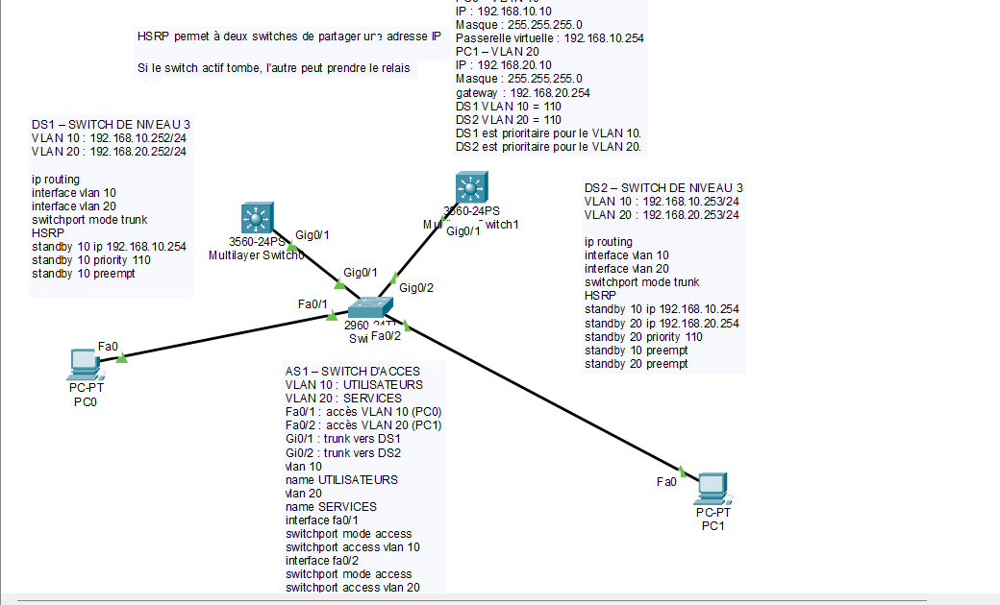

01 · PROJET SCOLAIRE — BTS SIO SISR
Conception d'une architecture réseau redondante
Réalisation d'une infrastructure réseau simulée avec Cisco Packet Tracer. Le projet consiste à configurer plusieurs commutateurs Cisco, à segmenter le réseau en VLAN et à mettre en place une redondance des passerelles.
Objectifs du projet
- Créer et configurer les VLAN 10 et VLAN 20.
- Configurer les liaisons trunk entre les commutateurs.
- Mettre en place le routage inter-VLAN.
- Configurer le protocole HSRP.
- Étudier la redondance des passerelles réseau.
Environnement technique
Document technique PDF : en préparation